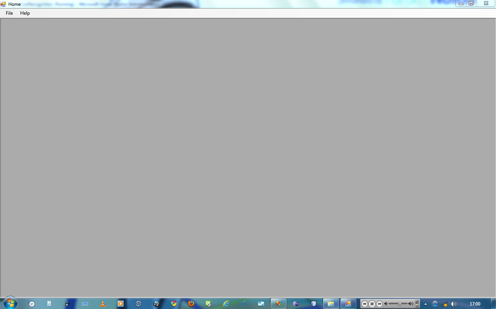
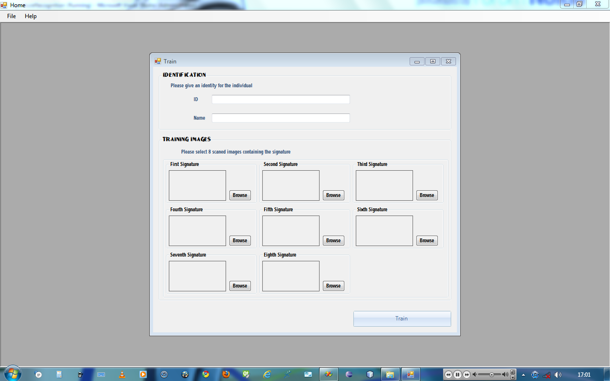
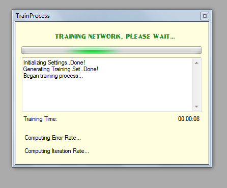
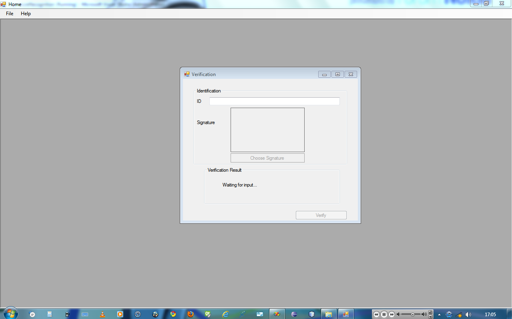

USER DOCUMENTATION
The SignatureRecognition application was built with ease of use in mind and the following steps explain usage in details while addressing each aspect of the application.
HOME SCREEN
When the application is done loading, after being launched from the program menu or the desktop, the user is presented with a blank window similar to this:

TRAINING
The first step in using this application, especially if it's a first run, is to train it to recognise the desired signature. This can be done by clicking File → Signature Training, then the user is presentd with a window that looks similar to this:

For successful training of the application, the following inputs are required
An identification number for the account
The name of the account holder,
Eight (8) different scanned images with the signature on each image possessing about 85% dominance, and must be a Bitmap image file with the *.bmp extension.
As soon as all the above input are complete, training can be started by clicking on the “Train” Button.
The time taken to train a set of signatures, largely depends on
the size (Length and Breath) in pixel of each image.
The CPU speed of the computer
The amount of free RAM Memory.
And the output of this window, although not visible is a file containing the details of the neural treaining.
VERIFICATION
When training is completed, as will be indicated by the training window below,

Signature verification can be done by clicking on File → Signature Verification. The window below can the be used to verify the signature of an already registered individual.

This window accepts as input the Identification Number of the account, and the signature to be verified, and then when the “Verify” Button is clicked, the applications gives an output then specifies the degree of accuracy with respect the the previously trained images. At this point physical acceptance of the signature is left to the discretion of the Officer.
HELP
To get more help on how to use the application, clicking on Help → Signature recognition help, give a user documentation which describes how to use the application.
ABOUT
For a short description of the program and author details, clicking on Help → About gives this short information.
SYSTEM REQUIREMENTS
The SignatureRecognition application consumes a lot of system resources, especially when training a signature.
PROCESSOR
Generally a faster processor will greatly improve the performance of the application. However, a processor of at least 1.6GHz will provide a good performance.
A multi-core processor will greatly improve performance, as the program is built to take advantage of this by using multiple threads.
HARD DISK
Hard disk space requirements depends on the images used for training. For example when training with images of average height of 30x30 pixels and an average size of 3KB, expected disk space required will be approximately 5MB per account.
While setup requires about 10MB of disk space.
IMAGE SCANNER
A good image scanner that can scan images at high definition.
RAM
At least 1GB or RAM memory will give a good performance.